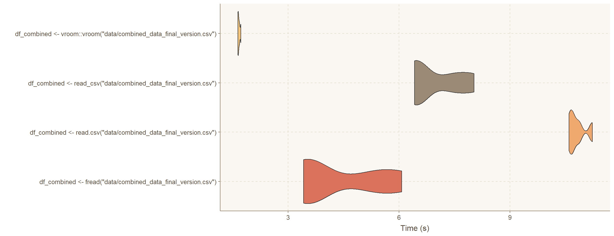
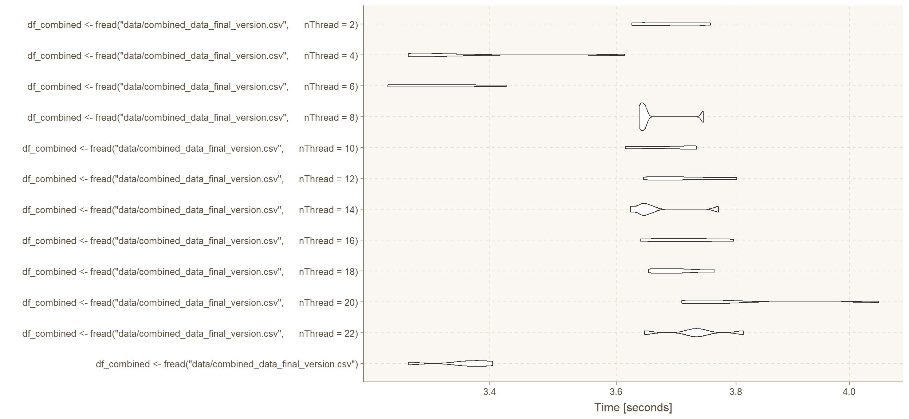

Code
library(tidyverse)
library(data.table)
library(microbenchmark)
library(DT)
library(ggthemes)
library(ggthemr)
library(flextable)library(tidyverse)
library(data.table)
library(microbenchmark)
library(DT)
library(ggthemes)
library(ggthemr)
library(flextable)ggthemr('dust')
df_combined <- fread("data/combined_data_VF2.csv") %>%
mutate_all(~ifelse(. == "", NA, .)) %>%
mutate(page_number = as.integer(page_number)) %>%
arrange(page_number)La Collection des discours publics, which translates to “The Collection of Public Speeches” in English, gathers more than 160,000 speeches delivered by key figures in French public life. This includes speeches by the President of the Republic since 1974, the Prime Minister and government members since the early 1980s, and communiqués from the Council of Ministers since 1974, among others.
The initial attempt was made using the rvest package, which I had previous experience with. However, I encountered an issue with undetected JavaScript that hindered the scraping process. Consequently, I switched to simulating normal human browsing behavior using Selenium, a technique I learnt in a PSL course last year, taught by Bruno Chaves.
This approach proved to be very effective. I also happened to have a sample code using this module, so I decided to proceed with it. In the GitHub repository, the scrapping_python.ipynb notebook was used to scrape various pages of the website.
As this process was somewhat time-consuming and too long to bear, I explored different methods to accelerate the process and successfully implemented multithreading using Python’s concurrent.futures module, significantly enhancing the speed of the scraping operation.
The relevant code can be found in the multithreading_scrapping.ipynb notebook.
Put the page numbers where the date is missing into a .txt file, each on a new line.
The challenge is that the CSS selector varies from page to page; sometimes, there is a “time” tag, sometimes, just a HTML <p> paragraph.
We do this to loop through them and retrieve the dates.
df_no_date2 <- df_combined %>%
filter(date == "" | is.na(date)) %>%
select(page_number) %>%
distinct()
#write vector to txt file
write.table(df_no_date2, "data/df_no_date2.txt", row.names = FALSE, col.names = FALSE)Place the page numbers where the text is missing into a .txt file in the data\ folder, each on a new line.
The challenge is that the CSS selector varies from page to page; sometimes it’s an ‘integral text’, other times it’s a ‘resume text’.
We do this to loop through the pages and retrieve the texts.
df_no_text <- df_combined %>%
filter(text == "" | is.na(text)) %>%
select(page_number) %>%
distinct()
#write vector to txt file
write.table(df_no_text, "data/df_no_text.txt", row.names = FALSE, col.names = FALSE)When I wrote the first scrapping script, I browsed a few pages to find similarities and difference between the pages. I noticed that it was easy to get the keywords with the fr-tag fr-tag--green-emeraude class.
The problem is that this class is also used for the tag of each discourse. I’ve also noticed that multiple tags can be assigned to a single discourse. I only kept the first one so this can be modified for future work.
What is left to do now is removing the keywords that are actually tags, which means removing the first keyword of each discourse and the “;” that follows.
df_combined <- df_combined %>%
mutate(keywords = stringr::str_replace(keywords, "^[^;]+\\s*;\\s*", ""))
write_csv(df_combined, "data/combined_data_final_version.csv")I processed a total of 12,348 CSV files, which were read and concatenated into a single large CSV file using the Polars library in Python.
The primary objective here is to evaluate the efficiency of various libraries in R in terms of the time they take to read this consolidated CSV file, which is approximately 1.2 GB in size.
This will help me for future work.
benchmark_results <- microbenchmark(
df_combined <- fread("data/combined_data_final_version.csv"),
df_combined <- read.csv("data/combined_data_final_version.csv"),
df_combined <- read_csv("data/combined_data_final_version.csv"),
df_combined <- vroom::vroom("data/combined_data_final_version.csv"),
times = 5
)
benchmark_results <- benchmark_results %>%
mutate(time = time / 1e9)
ggplot(benchmark_results) +
aes(x = expr, y = time, fill = expr) +
geom_violin(adjust = 0.7, scale = "width") +
coord_flip() +
theme(legend.position = "none")+
ylab("Time (s)")+
xlab("")
It seems like the vroom package is the fastest. However, I had some problems with the “media” column with vroom, so I’ll stick with fread.
By the way, the results of the microbenchmark package are as follows:
summary(benchmark_results) %>%
as.data.frame() %>%
mutate(across(-1, ~round(.,2))) %>%
flextable::flextable() %>%
flextable::theme_box() %>%
flextable::autofit()expr | min | lq | mean | median | uq | max | neval |
|---|---|---|---|---|---|---|---|
df_combined <- fread("data/combined_data_final_version.csv") | 3.42 | 3.45 | 4.39 | 3.72 | 5.29 | 6.08 | 5 |
df_combined <- read.csv("data/combined_data_final_version.csv") | 10.60 | 10.66 | 10.82 | 10.73 | 10.88 | 11.23 | 5 |
df_combined <- read_csv("data/combined_data_final_version.csv") | 6.42 | 6.43 | 6.98 | 6.55 | 7.46 | 8.03 | 5 |
df_combined <- vroom::vroom("data/combined_data_final_version.csv") | 1.64 | 1.65 | 1.67 | 1.66 | 1.68 | 1.72 | 5 |
#load library to detect number of cores
library(parallel)
cat("Number of cores:", detectCores())Number of cores: 12benchmark_results <- microbenchmark(
df_combined <- fread("data/combined_data_final_version.csv"),
df_combined <- fread("data/combined_data_final_version.csv", nThread = 22),
df_combined <- fread("data/combined_data_final_version.csv", nThread = 20),
df_combined <- fread("data/combined_data_final_version.csv", nThread = 18),
df_combined <- fread("data/combined_data_final_version.csv", nThread = 16),
df_combined <- fread("data/combined_data_final_version.csv", nThread = 14),
df_combined <- fread("data/combined_data_final_version.csv", nThread = 12),
df_combined <- fread("data/combined_data_final_version.csv", nThread = 10),
df_combined <- fread("data/combined_data_final_version.csv", nThread = 8),
df_combined <- fread("data/combined_data_final_version.csv", nThread = 6),
df_combined <- fread("data/combined_data_final_version.csv", nThread = 4),
df_combined <- fread("data/combined_data_final_version.csv", nThread = 2),
times = 5
)
#benchmark_results <- benchmark_results %>%
#mutate(time = time / 1e9)
#ggplot(benchmark_results) +
#aes(x = expr, y = time, fill = expr) +
#geom_violin(adjust = 0.7, scale = "width") +
#coord_flip() +
#theme(legend.position = "none")+
#ylab("Time (s)")+
#xlab("")+
#theme_minimal()
autoplot(benchmark_results)
In conclusion, it appears that specifying the number of threads while using the fread function is not particularly necessary for a file this size.